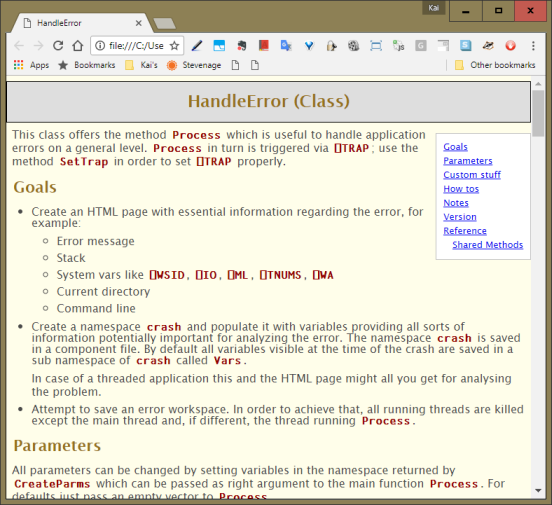
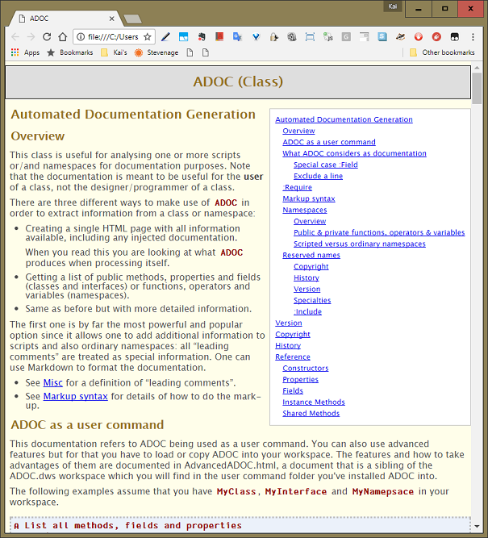
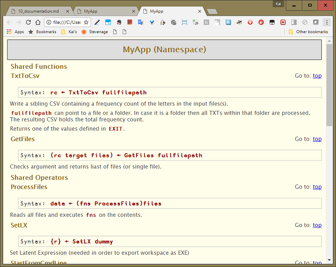
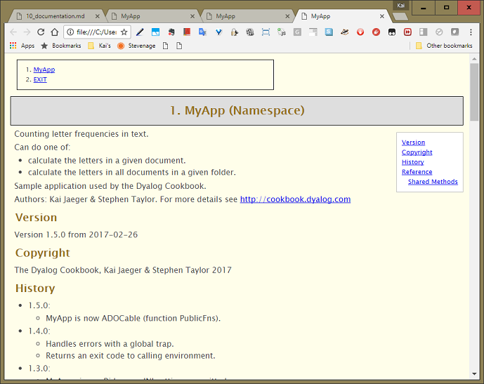
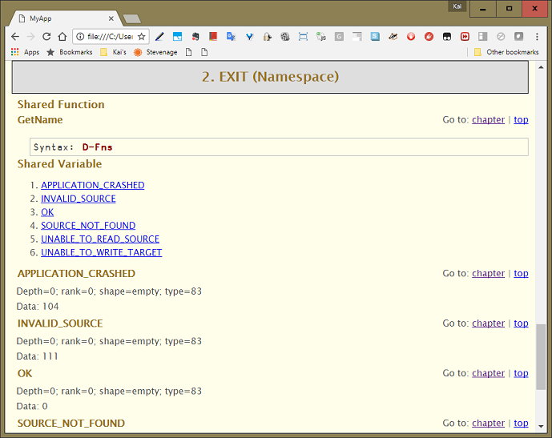

Documentation is the bad mother of software. Programmers learn early that we depend on it but must not trust it. On the one hand we need it for the software we use; on the other hand we learn a great wariness of it for the software we develop. Understanding why this is so will help us see what to do about documenting MyApp.
It helps to distinguish three quite different things people refer to as documentation.
- instructions on how to use the application
- a description of what the application does
- a description of how the application works
Unless you are writing a tool or components for other developers to use, all software is operated through a graphical user interface. Users know the common conventions of UIs in various contexts. The standard for UIs is relatively demanding.
If you know what the application is for, it should be obvious how to use its basic features. The application might help you with wizards (dialogue sequences) to accomplish complex tasks. A user might supplement this by consulting what the Help menu offers. She might search the Web for advice. The last thing she is likely to do is to go looking for a printed manual.
We’ll come in a later chapter to how to offer online help from a Help menu. For now, we mention Help to exclude it from what we mean by documentation.
This is a useful thing to have, perhaps as a sales document. One or two pages suffice. Including limitations is important: files in certain formats, up to certain sizes. Perhaps a list of Frequently Asked Questions [1] and their answers.
Beyond that, you have the formal tests. This is what you know the system does. It passes its tests. Especially if you’re supporting your application on multiple versions of Windows, you’ll want those tests to be extensive.
This is what you want when you revisit part of the code after six months – or six days in some cases. How does this section work? What’s going on here?
In the best case the code explains everything. Software is a story told in two worlds. One world is the domain of the user, for example, a world of customer records. The other world is the arrays and namespaces used to represent them.
Good writing achieves a double vision. The transformations described by the code make sense in both worlds. Ken Iverson once coined the term expository programming for this writing. Expository programs reveal their workings to the reader.
They also discover errors more easily, making it possible to “stare the bugs out”. (David Armstrong liked to say the best writing style for a philosopher lets him see his errors before his colleagues do.)
APL requires little ‘ceremonial code’ – e.g. declarations of data type – and so makes high levels of semantic density achievable. It is perhaps easier to write expository code than in more commonly-used languages. But we have learned great respect for how quickly we can forget what a piece of code does. Then we need documentation in its third sense.
It’s in this third sense that we’ll discuss documentation.
We write software for people and people press us for results, which rarely include documentation. No one is pressing us for documentation.
Documentation is for those who come after us, including our future selves. Since 80% of the lifetime costs of software are spent on maintenance, documentation is a good investment. If the software is ours, we’re more likely to make that investment. But there will be constant pressure to defer writing it.
The common result of this pressure is that application code has either no documentation, or its documentation is not up to date. Out-of-date documentation is worse than having none. If you have no documentation you have no help with the code. You have to read it and run it to understand what it does.
But however difficult that is, it is utterly reliable. Out-of-date documentation is worse: it will mislead you and waste your time before sending you back to the code. Even if the relevant part of it is accurate, once you learn to distrust it, its value is mostly gone.
The only place worth writing documentation is in the code itself. Maintaining documentation separately adds the uncertainty of matching versions. Writing the documentation as comments in the code encourages you to keep it in step with changes to the code. We write comments in three ways, serving slightly different purposes.
- Header comments
- A block of comments at the top of a function serves as an abstract, describing argument/s and result and the relationship between them.
- Heading comments
- Heading comment lines serve exactly as headings in a book or document, helping the reader to navigate its structure.
- Trailing comments
Comments at the ends of lines act as margin notes. Do not use them as a running translation of the code. Instead aim for expository style, and code that needs no translation. On lines where you’re not satisfied you’ve achieved expository style, do write an explanatory comment.
Better to reserve trailing comments for other notes, such as
⍝FIXME⍝ slow for >1E7 elements[3]. (Using a tag such as⍝FIXME⍝makes it easy to bookmark lines for review.) Aligning trailing comments to begin at the same column makes them easier to scan, and is considered “OCD compliant” [2].
The above conventions are simple enough and have long been in wide use.

The Dyalog editor offers a special command for aligning comments: AC. You can assign a keystroke to this command: open the Configuration dialog (Options / Configure…), select the Keyboard Shortcuts tab and sort the table with a click on the Code column, then look for AC.
If you are exporting scripts for others to use – for example, contributing to a library – then it’s worth going a step further. You and other authors of a script need to read comments in the context of the code, but potential users of a script will want to know only how to call its methods.
Automatic documentation generation will extract documentation from your scripts for other users. Just as above, the documentation is maintained as comments in the code. But now header comments are presented without the code lines.
ADoc is an acronym for automatic documentation generation. It works on classes and namespaces.
In its most basic function, it lists methods, properties and fields (functions, operators and variables) and requires no comments in the code.
In its more powerful function, it composes an HTML page from header comments in the code. Honouring Markdown conventions, it provides all the typographical features you need for documentation.
If Markdown is new to you, see the Markdown article on Wikipedia [4] and Markdown2Help’s own help file. Your time will be well spent: these days Markdown is used very widely.
Previously only found as a class in the APLTree library, ADoc is now shipped in Dyalog Version 17.0 as a user command.
Lists the methods and fields of a class. (Requires no comments.)
]ADoc #.HandleError -summary
*** HandleError (Class) ***
Shared Methods:
CreateParms
Process
ReportErrorToWindowsLog
SetTrap
VersionFor a more detailed list with arguments and results specify ]ADoc #.HandleError -summary=full.
]ADoc #.HandleError
Composes a documentation page in HTML and displays it in your default browser.
To get basic help on ADoc enter ]?adoc. For more detail, enter ]??adoc. For the full picture enter ]???adoc. The underlying ADOC class then processes itself and creates an HTML page with detailed information.

How might ADoc help us? Start by seeing what ADoc has to say about MyApp as it is now:
]ADoc #.MyApp
ADoc has found and displayed all the functions within the MyApp namespace. If MyApp contained operators or variables you would find them in the document as well.
We can improve this in several ways. Time for a new version of MyApp! Make a copy of Z:\code\v08 as Z:\code\v09.
First we edit the top of the script to follow ADoc’s conventions:
:Namespace MyApp
⍝ Counting letter frequencies in text.\\
⍝ Can do one of:
⍝ * calculate the letters in a given document.
⍝ * calculate the letters in all documents in a given folder.
⍝
⍝ Sample application used by the Dyalog Cookbook.\\
⍝ Authors: Kai Jaeger & Stephen Taylor.
⍝ For more details see <http://cookbook.dyalog.com>
...Next we specify which functions we want to be included in the document: not all but just those designed to be called from the outside. In a class those are called the public interface, and it’s easy to see why.
For classes ADoc can work out what’s public and what isn’t using the Public Access statements. For namespaces there is no such mechanism.
By default, ADoc considers all functions, operators and variables to be public; it also offers a mechanism to restrict this to what’s really public. For that, ADoc looks for a function Public. It may return an empty vector (nothing is public at all) or a list of names. This list would define what is public.
Let’s define the public functions at the bottom of the script:
...
∇ r←Public
r←'StartFromCmdLine' 'TxtToCsv' 'SetLX'
∇
:EndNamespaceADoc honours five functions in a special way if they exist: Copyright, History, Version, Public and ADOC_Doc. If they exist, their results are treated in a special way.
If Version is niladic and returns a three-item vector, the vector is taken as:
- Name
- Version number
- Version data
These pieces of information are then integrated into the document.
If Copyright is niladic and returns either a simple text vector or a vector of text vectors then the copyright declaration is integrated into the document.
History is expected to be a niladic function that does not return a result. Instead it should carry comments with information about the history of the script.
MyApp already had a function Version in place. So far we’ve added comments to it regarding the different versions. Those should go into History instead. So we replace the existing Version function by these three functions:
∇ Z←Copyright
Z←'The Dyalog Cookbook, Kai Jaeger & Stephen Taylor 2017'
∇
∇ r←Version
r←(⍕⎕THIS)'1.5.0' 'YYYY-MM-DD'
∇
∇ History
⍝ * 1.5.0:
⍝ * MyApp is now ADocable (function Public.
⍝ * 1.4.0:
⍝ * Handles errors with a global trap.
⍝ * Returns an exit code to calling environment.
⍝ * 1.3.0:
⍝ * MyApp gives a Ride now, INI settings permitted.
⍝ * 1.2.0:
⍝ * The application now honours INI files.
⍝ * 1.1.0:
⍝ * Can now deal with non-existent files.
⍝ * Logging implemented.
⍝ * 1.0.0
⍝ * Runs as a stand-alone EXE and takes parameters from the command line.
∇This gives us more prominent copyright and version notices as well as information about the most recent changes. Note that History is not expected to carry a history of all changes, but rather the most recent ones.
The variables inside EXIT are essential for using MyApp; they should be part of the documentation. ADoc has ignored the namespace EXIT but we can change this by specifying it explicitly:
]ADoc #.MyApp #.MyApp.EXIT
When you scroll down (or click at Exit in the top-left corner) then you get to the part of the document where EXIT is documented:

See Public interface above.
There is one more reserved name: ADOC_Doc. This is useful when you want to document an unscripted (ordinary) namespace. Just add this as a niladic function carrying comments that returns no or a shy result.
Its comments are then processed in exactly the same way leading comments in scripts are processed.
That will do for now.
Footnotes
Compile those from questions actually asked by users. It's a common mistake to put together “Question we would like our users to ask”.
Thanks to Roger Hui for this term.
Be it
⍝FIXME⍝or⍝CHECKME⍝or⍝TODO⍝- what matters is that you keep it consistent and searchable. That implies that the search term cannot be mistaken as something else by accident. For that reason,⍝TODO⍝is slighty better thanTODO.https://en.wikipedia.org/wiki/Markdown